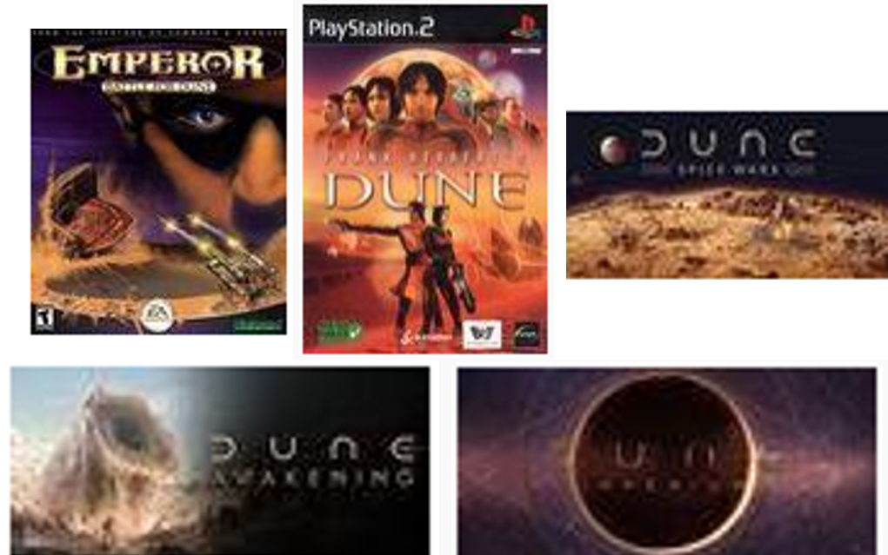

Actualmente, existen 5 videojuegos de dune, los cuales fueron creados desde 1998 y pueden ser jugados en PS2 y PC, Estos juegos son:
- Dune II: The Building of a Dynasty, también conocido como Dune II: Battle for Arrakis en algunas regiones, es un videojuego de estrategia en tiempo real (RTS) desarrollado por Westwood Studios y publicado por Virgin Games en 1992.
- Emperor: Battle for Dune es un videojuego de estrategia en tiempo real (RTS) desarrollado por Westwood Studios y lanzado en 2001. Es la continuación de la aclamada serie Dune de videojuegos,
- Frank Herbert's Dune es un videojuego de aventura lanzado en 2001, desarrollado por Cryo Interactive. A diferencia del juego de estrategia Dune II y su influencia en el género de estrategia en tiempo real, Frank Herbert's Dune se enfoca en la narrativa y la exploración, ofreciendo una interpretación más íntima del rico universo de Dune.
- Dune: Spice Wars es un juego de estrategia desarrollado por Shiro Games y publicado por Funcom para Xbox Series y PC.
- Dune: Awakening es un MMO de supervivencia desarrollado y publicado por Funcom para PlayStation 5, Xbox Series y PC. En esta ocasión con la forma de una aventura de acción y supervivencia en mundo abierto que transcurre en Arrakis.
|
 |